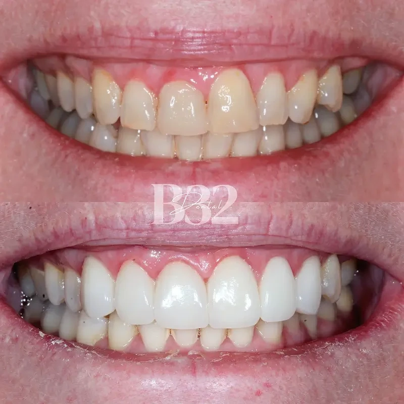
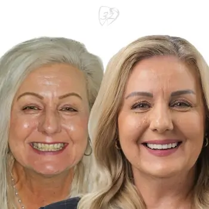
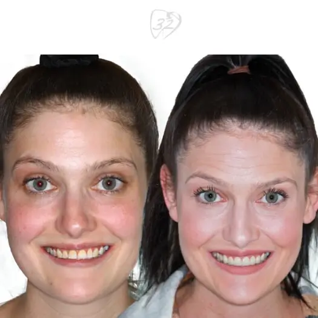
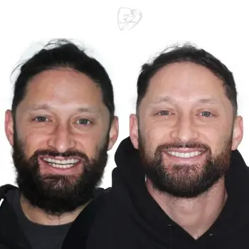
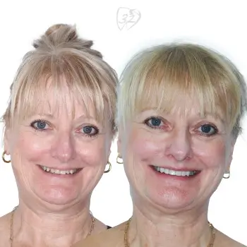

Porcelain & composite veneers in Pennant Hills
Dental imperfections can affect how you feel about your smile. Things like chips, gaps, and discolouration might make you self-conscious in social situations.
 5.0 from 360+ Google reviews
5.0 from 360+ Google reviews- Two materialsPorcelain or composite, chosen with you
- Often one visitfor composite veneers
- Consult firstWe check your oral health and goals
- All health fundsClaimed on the spot
Experience the art of an enhanced smile.
Do you have a natural tooth or teeth that bother you? Dental veneers could be just what you’re looking for. They offer a natural-looking way to enhance your teeth and boost your confidence, helping you feel great about showing off your smile again.
At Beyond 32 Dental, Dr Jeff Lin and Dr Jen Chung harness the latest technology to craft composite and porcelain veneers. These techniques ensure your transformation fits seamlessly with your smile.
What are dental veneers in Pennant Hills?
Veneers are thin, custom-made shells designed to cover the front surface of teeth, enhancing their appearance and creating a more polished smile.
These durable restorations effectively address a range of dental imperfections, including chips, gaps, and discolouration, providing a transformative solution.
Here’s what you get with us
- Custom designs for a perfect fit
- Durable materials for lasting results
- A natural appearance that enhances your smile
Contact us to find out how veneers can enhance your confidence and appearance.
Call (02) 9158 6334 →Porcelain or composite?
Both are tooth-coloured and both are custom-made. The difference is the material, and how it is made.
Porcelain veneers
Porcelain veneers are crafted from high-quality ceramic that mimics the natural translucency of tooth enamel.
Renowned for their durability and stain resistance, porcelain veneers are an excellent choice for long-lasting enhancement. They blend seamlessly with surrounding teeth to create a natural look.
Composite veneers
In contrast, composite veneers are made from a tooth-coloured resin that can be sculpted directly onto the teeth.
They may last less than porcelain veneers but offer a more affordable option. They can often be completed in a single visit, making them a versatile choice for quick smile adjustments.
Want to discuss veneers with our dental professionals? Visit our dental practice in Pennant Hills. If you are weighing veneers against other options, our cosmetic dentistry guide compares them side by side.
What is the procedure for veneers?
Obtaining dental veneers happens in three stages, starting with a consultation.
- Initial consultation
Our dentists will discuss your oral health and aesthetic goals.
- Preparation
If you’re an ideal candidate, our Pennant Hills dental experts will prepare your teeth by removing a thin enamel layer and taking impressions to create customised veneers.
- Bonding
After crafting, the veneers are bonded to your teeth to achieve a beautiful smile.
Dental veneers are best applied when your dental health is stable.
If you’re experiencing a dental emergency, such as gum disease, you must address it before commencing cosmetic treatments. As with all cosmetic treatments, underlying conditions can affect the longevity and success of veneers.
If you are due, we can start with a check up and clean.
Veneer results
A few of the smiles our team has worked on. Each was planned around the patient’s own teeth, so results look different from person to person.





Patient images are published with consent and are intended for educational purposes only. Results vary between individuals, and all dental procedures carry risks.
Related treatments
Veneer questions
Still unsure about something? Call us on (02) 9158 6334 and ask.
Can veneers replace missing teeth?
While dental veneers are not designed to replace missing teeth, they may be part of a comprehensive dental care plan that includes attaching a dental implant or crown.
If you’re near Pennant Hills, our dental care experts at Beyond 32 Dental can customise our dental services to meet your needs.
Are veneers suitable for everyone?
Most patients are ideal candidates for veneers, but it’s important to have an initial consultation to discuss your specific dental needs.
Our dentists offer an expert cosmetic dentistry consultation to evaluate your health and determine the best treatment options for your needs and goals, ensuring you receive quality dental care.
What is the procedure for veneers at your dental practice?
Obtaining dental veneers involves an initial consultation, where our dentists will discuss your oral health and aesthetic goals. If you’re an ideal candidate, we will prepare your teeth by removing a thin enamel layer and taking impressions to create customised veneers. After crafting, the veneers are bonded to your teeth. See the steps.
Why should I choose your dental practice?
At Beyond 32 Dental, we focus on providing personalised professional dental care for our local community.
Our commitment to making superb dental care accessible to you, coupled with the latest in dental technology, ensures that the outcome will leave you smiling.
Can I get cosmetic dentistry treatments with dental emergencies?
If you’re experiencing a dental emergency, such as gum disease, you must address it before commencing cosmetic treatments. As with all cosmetic treatments, dental veneers are best applied when your dental health is stable, as underlying conditions can affect their longevity and success.
In pain right now? See emergency dental care.
How are dental implants and veneers different?
Implants replace missing teeth, restoring both your teeth appearance and functionality. Veneers are attached to your natural teeth, and help improve discolouration, chips, gaps and minor misalignment.
Any surgical or invasive procedure carries risks. Before proceeding, you should seek a second opinion from an appropriately qualified health practitioner.